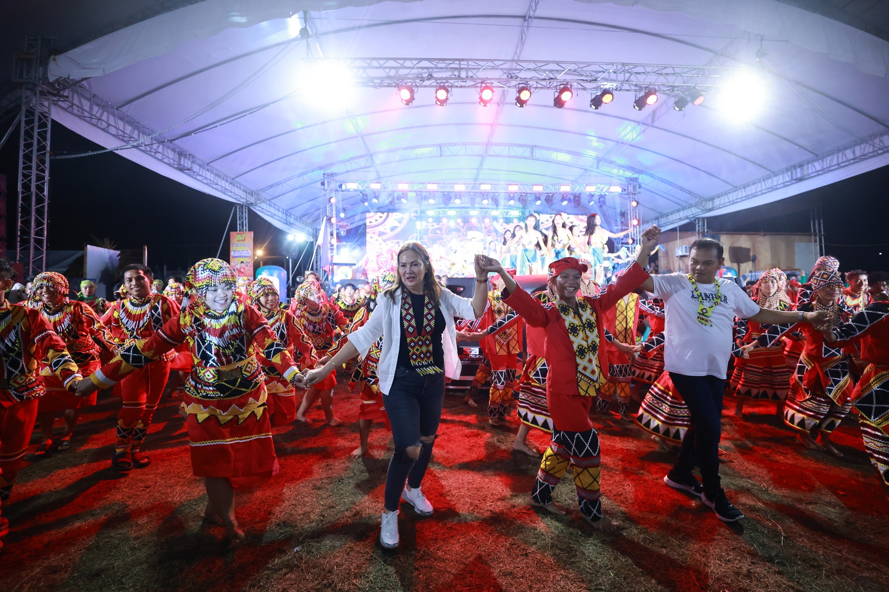
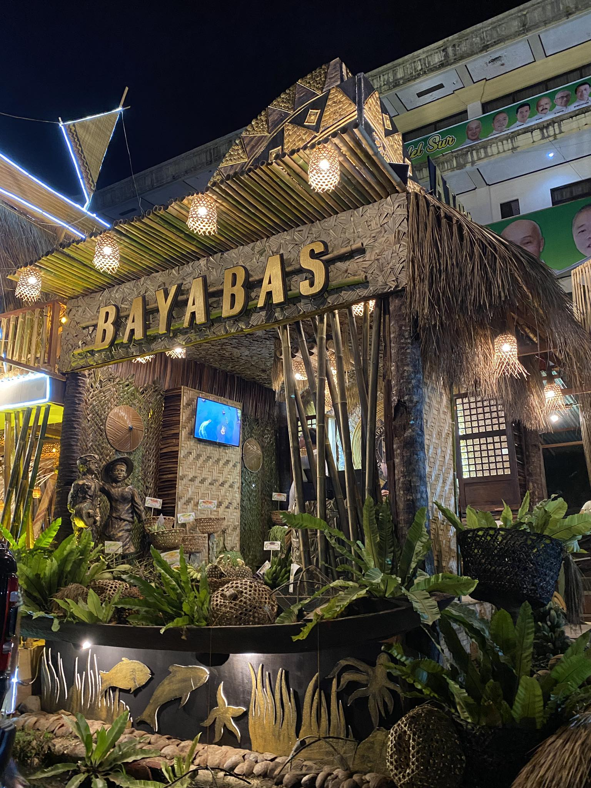
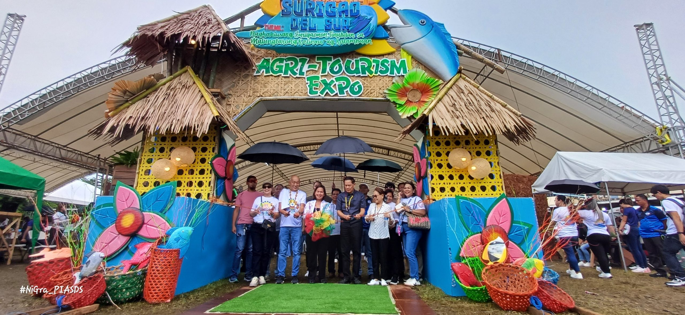
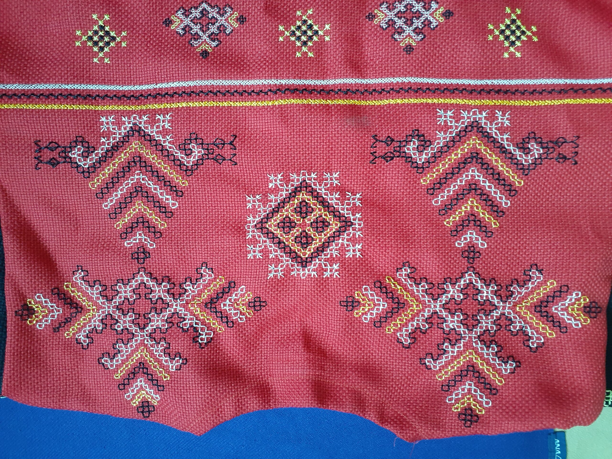
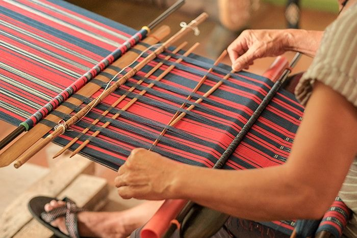

Stay updated with the latest news, events, and announcements from the Provincial Tourism Office of Surigao del Sur. From festival schedules to tourism milestones, find it all here.

The Provincial Tourism Office successfully conducted the Tourism Cultural Night themed "Sayaw sa Bulawanong Kultura" at the SDS Sports Center in Tandag City. All 17 municipalities and 2 cities of the province participated, treating the audience to an extraordinary showcase of traditional dances, soul-stirring music, and cultural performances that brought the rich heritage of Surigao del Sur to life on stage.
Another milestone for the province!


The Provincial Tourism Office recognized outstanding municipalities for their dedication to promoting tourism and showcasing the best of their local communities. LGU Bayabas won 1st place, LGU Tagbina earned 2nd place, and LGU San Agustin took 3rd place. This recognition reflects the commitment of local government units to developing and sustaining vibrant tourism destinations across Surigao del Sur.
Preserving indigenous crafts and culture!


In partnership with TESDA, the Provincial Tourism Office conducted a three-day Panuyamsuyam Traditional Embroidery and Manobo Vest Making Training in Sitio Ibuan, Barangay Mampi, Lanuza. The training aimed to preserve and revitalize indigenous craft traditions while providing indigenous community members with livelihood skills that can generate sustainable income through cultural tourism and artisanal products.